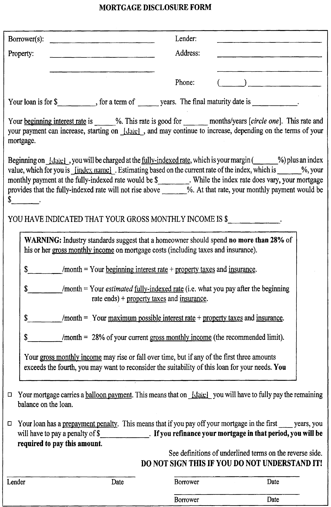

(a)(1) A licensee who offers to make or procure a loan secured by a first or subordinate mortgage or deed of trust on a single to 4-family home shall provide the borrower with a financing agreement executed by the lender.
(2) The financing agreement shall provide:
(A) The term and principal amount of the loan;
(B) An explanation of the type of mortgage loan being offered;
(C) The rate of interest that will apply to the loan and, if the rate is subject to change, or is a variable rate, or is subject to final determination at a future date based on some objective standard, a specific statement of those facts;
(D) The points and all fees, if any, to be paid by the borrower or the seller, or both; and
(E) The term during which the financing agreement remains in effect.
(3) If all the provisions of the financing agreement are not subject to future determination, change, or alteration, the financing agreement shall constitute a final binding agreement between the parties as to the items covered by the financing agreement.
(a-1)(1) Within 3 business days of an application for a non-conventional mortgage loan, the licensee shall provide to the borrower the written disclosures executed by the lender that are required under this section.
(2) No non-conventional mortgage loan shall be consummated unless the borrower has signed the disclosures required under this section and returned the disclosures to the mortgage lender.
(3) The written disclosures required under this section shall be printed on a single page, front and back, and include the following:
“(A) Borrower(s) ..........
“(B) Property Address ..........
“(C) Lender ..........
“(D) Lender Address ..........
“(E) Lender Phone Number ..........
“(F) Your loan is for $ .......... , for a term of .......... years. The final maturity date is ..........
“Your beginning interest rate is ___ %. This rate is good for ___ months/years [circle one]. This rate and your payment can increase, starting on [date] , and may continue to increase, depending on the terms of your mortgage.
“(G) Beginning on .......... , you will be charged at the fully-indexed rate, which is your margin (.......... %) plus an index value, which for you is .......... . Estimating based on the current rate of the index, which is .......... %, your monthly payment at the fully-indexed rate would be $ .......... . While the index rate does vary, your mortgage provides that the fully-indexed rate will not rise above .......... %. At that rate, your monthly payment would be $..........
“(H) YOU HAVE INDICATED THAT YOUR GROSS MONTHLY INCOME IS $ ..........
“(I) WARNING: Industry standards suggest that a homeowner should spend no more than 28% of his or her gross monthly income on mortgage costs (including taxes and insurance).
“(J) $ .......... /month = Your principal + initial interest + taxes and insurance.
“(K) $ .......... /month = Your principal + adjusted interest + taxes and insurance.
“(L) $ .......... /month = Your principal + maximum interest + taxes and insurance.
“(M) $ .......... /month = 28% of your current gross monthly income (the recommended limit).
“(N) Your gross monthly income may rise or fall over time, but if either of the first 3 amounts exceeds the fourth, you may want to reconsider the suitability of this loan for your needs. You may cancel your mortgage application within 5 business days of receiving this form.
“(O) Your mortgage carries a balloon payment. This means that on ...... , you will have to fully pay the remaining balance on the loan.
“(P) Your loan has a prepayment penalty. This means that if you pay off your mortgage in the first .......... years, you will have to pay a penalty of $ .......... . If you refinance your mortgage in that period, you will be required to pay this amount.
“(Q) See definitions of underlined terms on reverse side. DO NOT SIGN THIS IF YOU DO NOT UNDERSTAND IT!
“....................
“Lender’s Authorized Representative and date
“....................
“Borrower(s) and date.”
(4) The disclosures required under this section shall be in the following form:

(5) The Commissioner may prescribe, by rule, a different form for the written disclosures. The proposed rules shall be transmitted to the Council for a 60-day period of review, excluding Saturdays, Sundays, legal holidays, and days of Council recess. If the Council does not approve or disapprove the proposed rules by resolution within the 60-day review period, the proposed rules shall be deemed approved.
(6) Certain definitions and explanations arising from the written disclosures required under this section shall be printed on a single page, front and back, and include the following:
“Beginning interest rate: means the interest rate the borrower pays at the beginning of the loan. In many types of loans, this rate is good for only a few years and may increase significantly.
“Fully indexed rate: is an indicator of what will happen to the interest rate on the loan and the monthly payments. It is today’s estimate of how high the interest rate on an adjustable rate mortgage will go. It is calculated by taking a defined index rate and adding a certain number of percentage points, called the margin. Since the index rate can go up or down, the borrower cannot be sure what the future adjustable interest rate will be. Borrowers must make sure they can afford the fully indexed interest rate and not just the initial interest rate.
“Maximum possible interest rate: means the highest your interest rate can go. Most loans with adjustable rates have a defined maximum rate or lifetime cap. Borrowers need to think about how likely it may be that the interest rate can go this high.
“Gross monthly income: means the borrower’s gross, pre-tax income per month. Borrowers should make sure the monthly household income amount shown on the form is correct.
“Monthly mortgage payment including taxes and insurance: means the amount the borrower must pay every month for interest, repayment of loan principal, home insurance premiums, and property taxes owed to the District of Columbia. Over time, in addition to any possible increases in the loan’s interest rate, the insurance premiums and property taxes are likely to increase.
“Prepayment penalty: means any additional fee imposed by the mortgage lender on the borrower if the borrower pays off the loan early. Borrowers must make sure they know whether their loan has a prepayment penalty fee and how it works.
“Balloon payment: means that a large repayment of loan principal is due at the end of the loan. This almost always means that the borrower has to get a new loan to make the balloon payment.
“Payment option loan: means a mortgage loan that allows the borrower to pay less than the interest being charged on the loan. The unpaid interest is added to the loan, so the loan amount grows larger. Borrowers must make sure they know whether their loan is a payment option loan and how it works.
“Points: means the fee, expressed as a percentage of the loan, a borrower pays to the mortgage lender at closing, usually in exchange for a lower interest rate.
“Default: means a borrower has failed to make the payments due on the mortgage loan. Once a borrower is in default on the loan, the mortgage lender can seek to foreclose on the property.
“Foreclosure: means the legal process in which the mortgage lender can seize the borrower’s property if the borrower continually fails to make the payments due on the mortgage loan.
“Property tax: means the taxes owed to the District of Columbia as a result of the borrower owning the property.
“Insurance: means property insurance that covers private homes and residences. It is required by mortgage loans in order to protect the mortgage lender if the home is destroyed.
“Monthly condominium/co-operative/homeowner association fees: means the monthly fees that must be paid by the borrower if the borrower’s property is a condominium, co-operative, or subject to a homeowner association. These fees usually are collected on a monthly basis. Failure to pay these fees can result in a lawsuit against the borrower by the condominium, co-operative, or homeowner association. As with property taxes and homeowners’ insurance, these fees are likely to increase over time.“
(7) The Commissioner may prescribe, by rule, additional terms, definitions, and explanations. The proposed rules shall be transmitted to the Council for a 60-day period of review, excluding Saturdays, Sundays, legal holidays, and days of Council recess. If the Council does not approve or disapprove the proposed rules by resolution within the 60-day review period, the proposed rules shall be deemed approved.
(8) The information pursuant to this section shall be given to the borrower in a prominent form, separate from other disclosures, in either electronic or physical form and:
(A) In a 12-point font;
(B) In plain English or in the language of the mortgage lender’s presentation to the borrower; and
(C) If given to the borrower on a physical piece of paper, shall be printed on a red piece of paper measuring 8.5 inches by 11 inches.
(9) Within 5 business days of receiving the information pursuant to this section, the borrower may cancel the application for a mortgage loan with no loss of any security deposit or any other funds applied to guarantee an interest rate, not including reasonable fees incurred to process the application. The borrower shall be notified of this right to cancel at the time the information pursuant to this section is provided.
(b)(1) The financing agreement executed by the lender shall be delivered to the borrower at least 72 hours before the time of settlement agreed to by the parties and shall include:
(A) The effective fixed interest rate or initial interest rate that will be applied to the loan; and
(B) A restatement of all the remaining unchanged provisions of the financing agreement.
(2) Prior to execution of the financing agreement, the borrower may waive in writing the 72-hour advance presentation requirement and accept the commitment at settlement only if compliance with the 72-hour requirement is shown by the lender to be infeasible.
(3) A borrower aggrieved by any violation of this section shall be entitled to bring a civil suit for damages, including reasonable attorney’s fees, against the lender.
(Sept. 9, 1996, D.C. Law 11-155, § 14, 43 DCR 4213; Jan. 29, 2008, D.C. Law 17-90, § 2(b), 54 DCR 11925; July 18, 2009, D.C. Law 18-38, § 2(h), 56 DCR 4290.)
Prior Codifications
1981 Ed., § 26-1013.
Section References
This section is referenced in § 28-3904.
Effect of Amendments
D.C. Law 17-90 added subsec. (a-1).
D.C. Law 18-38, in subsec. (a)(1), deleted “to be occupied by the borrower” following “home”; in subsec. (a-1), rewrote pars. (1), (3)(J) to (L), and (9).
Emergency Legislation
For temporary (90 day) amendment of section, see § 2(h) of Mortgage Lender and Broker Emergency Amendment Act of 2008 (D.C. Act 17-617, December 22, 2008, 56 DCR 189).
For temporary (90 day) amendment of section, see § 2(h) of Mortgage Lender and Broker Congressional Review Emergency Amendment Act of 2009 (D.C. Act 18-31, March 16, 2009, 56 DCR 2327).
Temporary Legislation
Section 2(h) of D.C. Law 17-350, in subsec. (a)(1), deleted “to be occupied by the borrower”; and, in subsec. (a-1), rewrote pars. (1), (3)(J) through (L), and (9), to read as follows:
“(a-1)(1) Within 3 business days of an application for a non-conventional mortgage loan, the licensee shall provide to the borrower the written disclosures executed by the lender that are required under this section.”
“(J) $ ...../month = Your principal + initial interest + taxes and insurance.
“(K) $ ...../month = Your principal + adjusted interest + taxes and insurance.
“(L) $ ...../month = Your principal + maximum interest + taxes and insurance.”.
“(9) Within 5 business days of receiving the information pursuant to this section, the borrower may cancel the application for a mortgage loan with no loss of any security deposit or any other funds applied to guarantee an interest rate, not including reasonable fees incurred to process the application. The borrower shall be notified of this right to cancel at the time the information pursuant to this section is provided.”
Section 5(b) of D.C. Law 17-350 provided that the act shall expire after 225 days of its having taken effect.
Editor's Notes
Section 4 of D.C. Law 17-90 provided that section 2 shall apply 30 days after the effective date of this act.